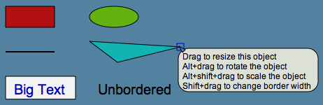
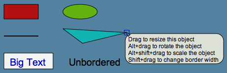
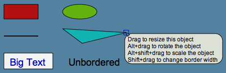

Lively Kernel Tutorial: (2) Resizing, Rotating and Reshaping Objects Using Handles
You can resize, rotate and reshape objects using handles that
are displayed in the corners of each object.
Line objects can be reshaped by grabbing the round handle
in the middle of the line.
Handles have balloon help to summarize the behavior
of each handle.

Notes:
You can rotate an object by keeping the Command (Alt) key down
while dragging one of the handles.
You can resize (scale) an object by keeping both the Command (Alt)
and Shift keys down while dragging one of the handles.
You can change the border width of each object by keeping the Shift key down
while dragging one of the handles.
You can create polygons/polyline objects by "splitting" a line using
the round blue handle in the middle of the line.
You can remove/join vertices of a polygon/polyline by dragging any point
of a polyline onto another point. When a join operation is about to happen,
the blue handle changes temporarily into a red handle.
Try it yourself!
Try modifying the objects below by using their handles.
 
